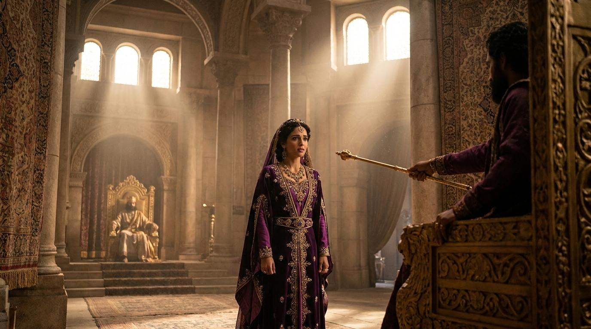

弟兄姊妹們，今天我們要進入波斯帝國那充滿權謀與殺機的內院。在這個猶大民族面臨滅種危機的時刻，神的名字雖然隱藏，但祂的手卻從未離開。
當以斯帖說出「我若死就死吧」時，她不是在選擇死亡，而是在選擇將民族的命運完全交託給那位掌權的神。這場禁食，成為她屬靈生命的轉捩點。
當我們面對挑戰時，是否也能像以斯帖一樣，放下自己的恐懼，穿上屬天的勇氣，並在神的引導下，智慧地處理問題？讓我們在這危機中，一同看見神那隱藏卻又極其真實的恩典。

以斯帖記 4:16：「你當去招聚書珊城所有的猶大人，為我禁食三晝三夜，不吃不喝；我和我的宮女也要這樣禁食。然後我違例進去見王，我若死就死吧！」
主啊，在這充滿變數與危機的世代中，我們常常如同以斯帖一樣，面臨著生死攸關與安逸妥協的抉擇。求祢賜給我們「死就死吧」的勇氣，在看不見祢作為的時候，依然堅信祢掌權。讓我們學會用禁食與禱告來代替恐慌，用順服來回應祢的呼召。當我們憑信心邁出步伐時，求祢向我們伸出施恩的金杖，引導我們走進祢所預備的得勝筵席中。奉主耶穌基督的名求，阿們。
關鍵字：禁食 (tsuwm)、死就死吧 ('abad)
這是將生死主權完全交託給神的最高順服。年輕的宣教士吉姆·艾略特曾言：「為得著那不會失去的，而付出那不能保有的，這人絕不是傻瓜。」這正是「死就死吧」之精神的體現。
關鍵字：施恩 (chen)、伸出 (yashat)
金杖的伸出，代表了律法的豁免。當我們在暗處向神降服，神就會在明處為我們開路。正如司布真所言：「神的護理是基督徒最好的枕頭。」
關鍵字：筵席 (mishteh)
以斯帖沒有用血氣去解決問題，而是跟隨神的節奏。陶恕提醒：「神從不匆忙。我們最大的痛苦之一，就是試圖加快神的步伐。」
弟兄姊妹們，今天我們要進入波斯帝國那充滿權謀與殺機的內院。在這個猶大民族面臨滅種危機的時刻，神的名字雖然隱藏，但祂的手卻從未離開。
當以斯帖說出「我若死就死吧」時，她不是在選擇死亡，而是在選擇將民族的命運完全交託給那位掌權的神。這場禁食，成為她屬靈生命的轉捩點。
當我們面對挑戰時，是否也能像以斯帖一樣，放下自己的恐懼，穿上屬天的勇氣，並在神的引導下，智慧地處理問題？讓我們在這危機中，一同看見神那隱藏卻又極其真實的恩典。